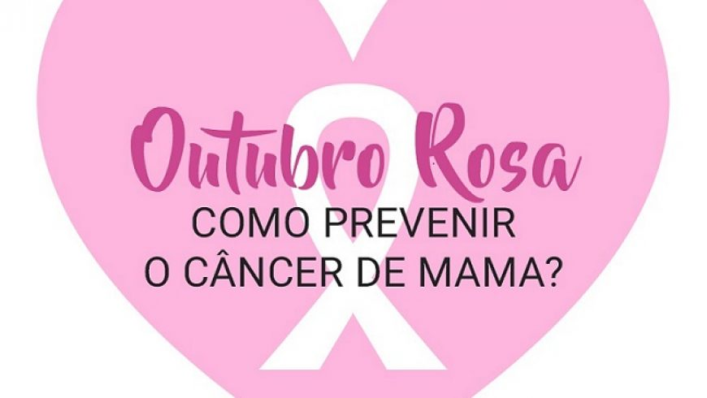
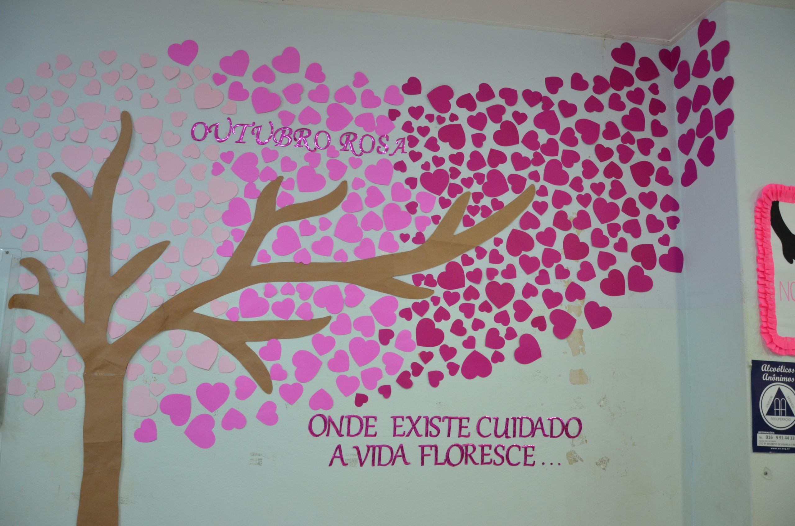

O câncer de mama atinge milhares de pessoas todos os anos. Segundo o INCA (Instituto Nacional de Câncer), a estimativa para 2022 era de 66.280 novos casos, sendo que 99% deles ocorrem em mulheres. Diante desse cenário, alguns cuidados com a saúde podem ajudar no diagnóstico precoce, poupando vidas e dando mais chances de cura, como o autoexame e a mamografia.
Outubro Rosa: prevenção e diagnóstico precoce do câncer de mama. O mês de Outubro já é conhecido mundialmente como um mês marcado por ações afirmativas relacionadas à prevenção e diagnóstico precoce do câncer de mama. O movimento, conhecido como Outubro Rosa, é celebrado anualmente desde os anos 90.
Acesse https://encurtador.com.br/stDMR para mais informações.
Quando é selebrada data A é celebrada anualmente, com o objetivo de compartilhar informações e promover a conscientização sobre a doença; proporcionar maior acesso aos serviços de diagnóstico e de tratamento e contribuir para a redução da mortalidade.
Acesse /https://www.gov.br/inca/pt-br/assuntos/campanhas/2022/outubro-rosap para mais informações.
O foco da canpanhaO maior foco da campanha é alertar mulheres e sociedade sobre a importância da prevenção e do diagnóstico precoce do câncer de mama e, mais recentemente, também sobre o câncer de colo do útero.
Acesse https://encurtador.com.br/hqxZ6 para mais informações.
O Outubro Rosa: é um movimento de conscientização do câncer de mama, idealizado para disseminar a informação sobre prevenção, diagnóstico precoce e tratamento da doença. A campanha nasceu em 1990, em Nova York, quando a Fundação Susan G.
Acesse https://encurtador.com.br/tI458para mais informações.
O que é o outubro rosa Como medidas que podem contribuir para a prevenção primária da doença, estimula-se, portanto, praticar atividade física, manter o peso corporal adequado, adotar uma alimentação mais saudável e evitar ou reduzir o consumo de bebidas alcóolicas. Amamentar é também um fator protetor.
Acesse https://encurtador.com.br/enxMPpara mais informações.
causas do cancer de mamaO câncer de mama não tem uma causa única. Diversos fatores estão relacionados ao aumento do risco de desenvolver a doença, tais como: idade, fatores endócrinos/história reprodutiva, fatores comportamentais/ambientais e fatores genéticos/hereditários (Adami et al., 2008).
Acesse https://encurtador.com.br/fX057para mais informações.
